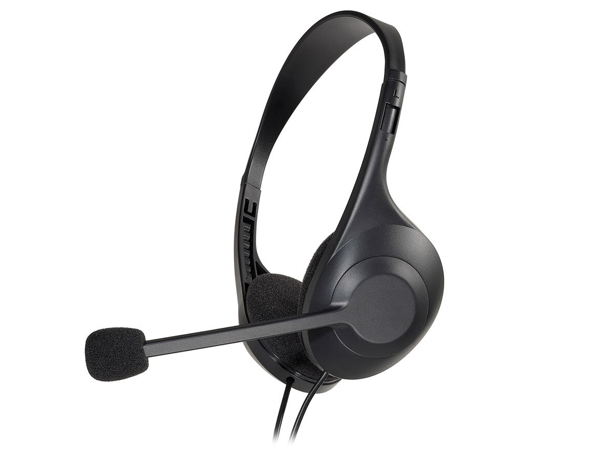
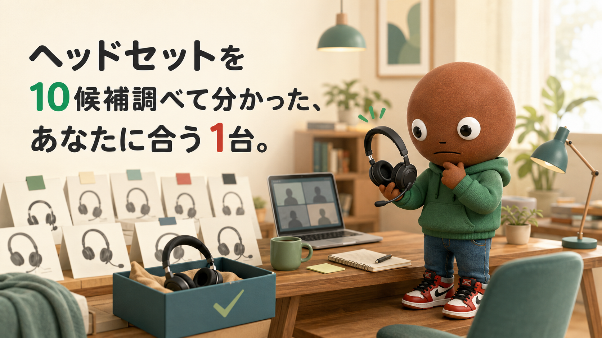
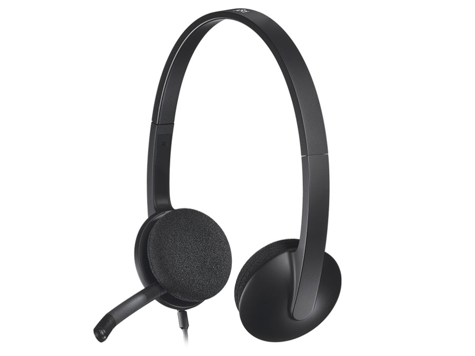
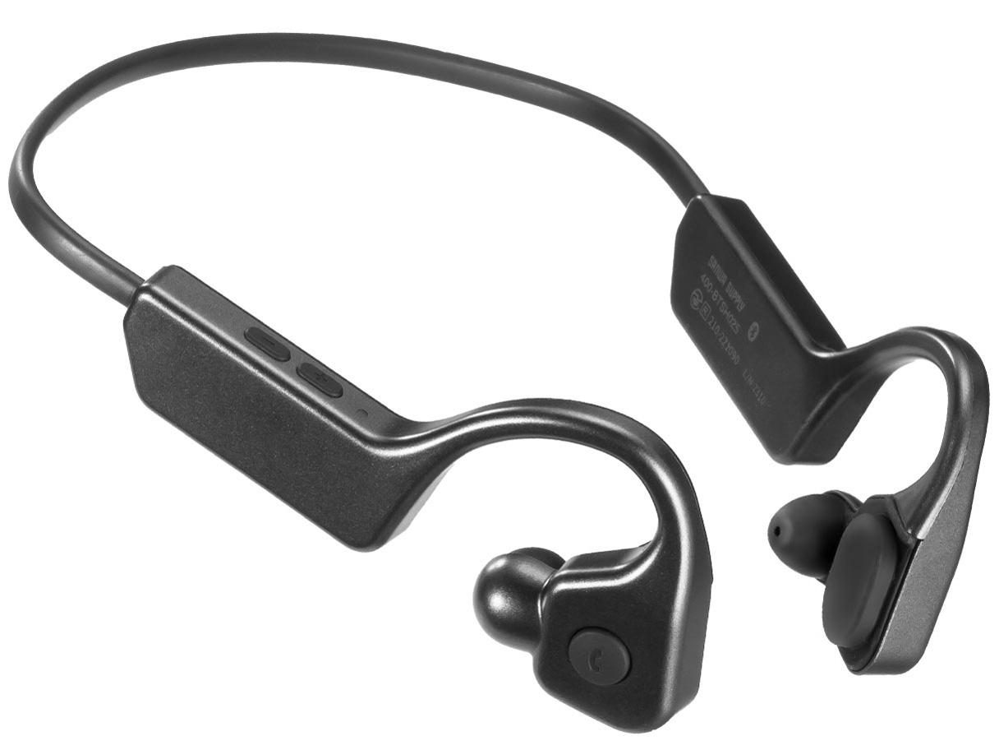
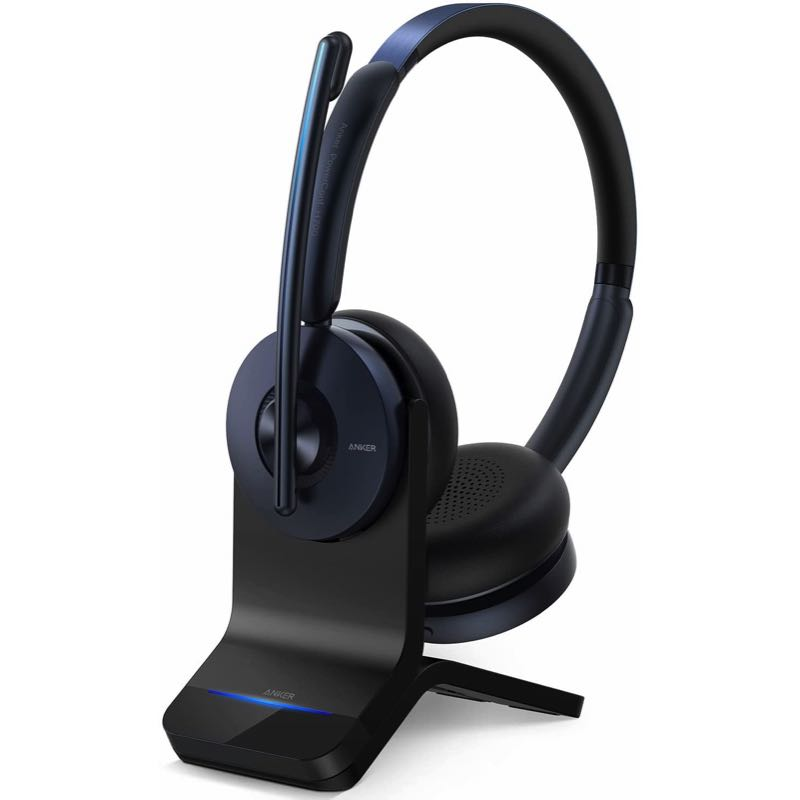
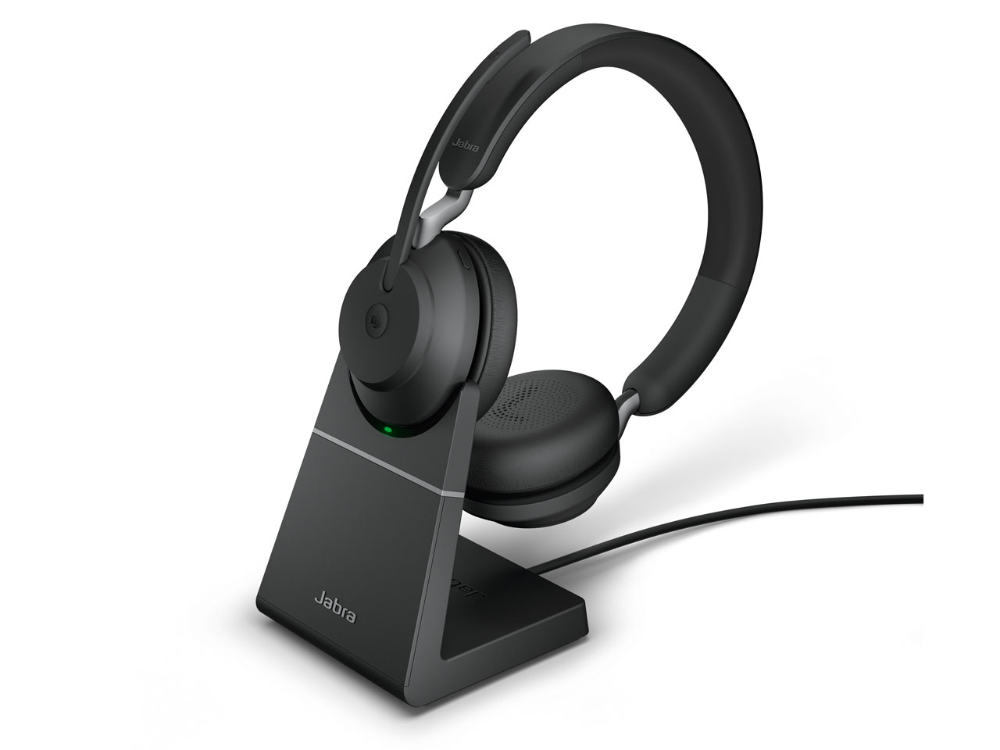
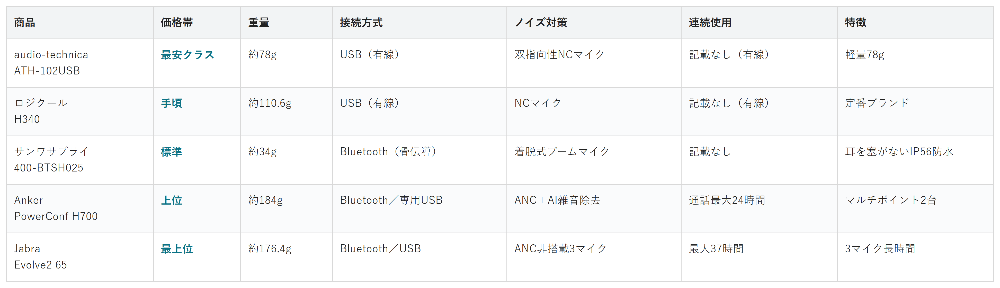

Amazonで見る在宅でWeb会議が続き、耳の痛みや声の聞こえにくさが気になる人へ
ヘッドセット10候補を調査。価格・重量・接続方式・ノイズ対策から、選び方の違う5商品を比較しました。
自分に合うヘッドセットを探す
この記事はAmazonアソシエイト・プログラムの参加者として、紹介料を得る場合があります（PR）。仕様は調査時点の情報です。
10候補から、選び方の違う5商品に絞りました。まずは気になる1台へ。向いている人・向いていない人と、低評価レビューもまとめています。
あなたの使い方に合う、1台を。

Amazonで見る
Amazonで見る
Amazonで見る
Amazonで見る
Amazonで見る横にスワイプして、5商品を見比べる
調べてわかったのは、基準がシンプルだという点です。
1つ目は「装着スタイル」。耳を塞ぐオーバーヘッド型か、骨伝導のように塞がない型かです。
2つ目は「接続の安定感」。有線かBluetoothか、専用アダプタが付いているかどうかです。
価格帯には、かなり幅がありました。

価格帯・重量・接続方式・ノイズ対策・連続使用・特徴の比較（価格帯は最安クラス〜最上位の5段階）
選ぶ決め手とにかく手頃に試したいなら、この1台です。
audio-technica製
ATH-102USBは
重量は約78gと軽量です。
USB Type-A/Cに
両対応した有線接続。
双指向性の
ノイズキャンセリングマイクを搭載しています。
選ぶ決め手無難に選びたいなら、この1台です。
参考：価格.com レビュー
ロジクールH340は
重量は約110.6g。
USB Type-Aの
有線接続です。
Web会議アプリでの
動作実績が豊富な
定番ブランドです。
通気性のいい
スポンジパッドを
採用しています。
選ぶ決め手耳の痛みを解消したいなら、この1台です。
参考：価格.com レビュー
サンワサプライ
400-BTSH025は
重量は約34gと
最軽量級です。
骨伝導と空気伝導の
デュアルスピーカーで、
耳を塞ぎません。
Bluetooth接続で、
IP56の防水にも
対応しています。
選ぶ決め手接続の安定感を重視するなら、この1台です。
参考：価格.com レビュー
Anker H700は
正式名称は
PowerConf H700です。
重量は約184g。
Bluetooth5.0と、
専用USBアダプタの
両方で接続できます。
アクティブノイズ
キャンセリングと、
AIが騒音を除去する
機能を搭載しています。
連続通話は
最大24時間、
2台同時接続にも
対応しています。
保証は18ヶ月、
会員登録で
6ヶ月延長されます。
選ぶ決め手バッテリー持ちを最優先するなら、この1台です。
参考：HelenTech
Jabra Evolve2 65は
5商品で一番高価です。
重量は約176.4g。Bluetooth5.0と
USBアダプタで、
2台同時接続できます。
アクティブノイズ
キャンセリング(ANC)は
非搭載ですが、
デジタルMEMSマイクを
3個搭載しています。
連続使用は最大37時間です。
Amazonで見る→私も在宅でWeb会議が続く日、耳の痛みや声の聞こえにくさが気になっていました。
ヘッドセットは種類が多くて、正直迷います。なので今回、メーカー公式サイトと価格.com、マイベストで調査。低評価の商品も含めて計10候補から5商品まで絞り込みました。
各商品ごとに、向いてる人・向いてない人も調べているので、自分に合ったヘッドセットを探してみてください。
今回、メーカー公式サイトと価格.com、マイベストで調査を行いました。調査したのは下記10候補です。
audio-technica2機種、ロジクール1機種。エレコム1機種、バッファロー1機種。サンワサプライ1機種、Anker1機種。Jabra2機種、SHOKZ1機種。
この中から、5つに絞りました。
ATH-101USBは、片耳タイプで、両耳のATH-102USBと役割が重複するため見送りました。
エレコムHS-HP30UBKとバッファローBSHSUH12BKは、どちらも有線USB・両耳で、ATH-102USBやH340と役割が重複するため見送りました。
Jabra Evolve2 40は、有線接続でパッシブノイズキャンセリングのみ。ワイヤレスで長時間使える機種として、H700とEvolve2 65を採用したため、見送りました。
SHOKZ OpenComm2は、骨伝導という役割が400-BTSH025と重複するため見送りました。
装着感や保証の手厚さを重視するなら、有力な選択肢だと思います。
上の10候補とは別に、サクラチェッカーで要注意と判定された商品も3つ調べました。
個別レビューの本文までは読み込んでいないため、サクラチェッカーが機械的に検出した事実だけを正直に書きます。
Weatwoのワイヤレスヘッドセットは、レビュー242件で、カテゴリ平均をやや下回っていました。
出品者の所在地は中国と推定され、公式サイトの記載はありませんでした。
RAOPINGXの片耳ヘッドセットはレビュー42件とカテゴリ平均640件を大幅に下回っていました。
Bearoamの片耳ヘッドセットは逆に、レビュー703件でカテゴリ平均の約581%でした。
3つとも共通していたのは、公式サイトが無いことと、本社所在地の記載が無いことでした。
10商品以上を比較していて、一番驚いたのは重量の差でした。
同じ「ヘッドセット」でも、34gから188gまで、5倍以上の開きがありました。
もう1つの発見は、骨伝導タイプの価格差でした。
サンワサプライの400-BTSH025に対し、SHOKZのOpenComm2はかなり高価格でした。
同じ骨伝導の仕組みでも、保証の手厚さなどで価格が大きく変わると実感しました。
サクラチェッカーを調べていた時も発見がありました。
レビュー件数がカテゴリ平均を大きく外れる商品が、実際に存在していました。
多すぎても少なすぎても、注意信号になると改めて実感しました。
ここまで読んでもまだ迷ったら、Web会議アプリでの動作実績が豊富な定番ブランドのロジクールH340が最初の1台におすすめです。
骨伝導のような特殊な装着感や機能の癖が無く、価格も5商品の中で中間帯なので、とりあえず無難に選びたい人には外しにくい選択です。
Amazonで見る→Q. ヘッドセットは何を基準に選べばいい？
A. 装着スタイルと、接続の安定感をまず確認するのがおすすめです。
Q. 有線とワイヤレス、どちらがいい？
A. 認識の安定を重視するなら有線、自由に動きたいならワイヤレスが向いています。
Q. 骨伝導タイプは耳に優しいの？
A. 耳を塞がないため、長時間の会議で痛くなりにくいという利点があります。
Q. 安いモデルでもWeb会議に使える？
A. ノイズキャンセリングマイク搭載モデルなら、価格を抑えても実用的に使えます。